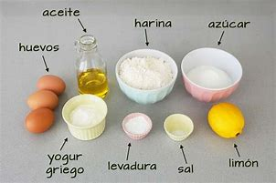

Bizcocho de yogur muy fácil y esponjoso con la receta de Karlos Arguiñano, un bizcocho casero al estilo de la abuela preparado de la forma tradicional.
El bizcocho, también conocido como bizcochuelo o queque, es uno de los dulces más tradicionales de nuestra gastronomía. La masa se prepara con ingredientes básicos que todos tenemos en casa: harina, huevos, aceite (u otras grasas), yogur y azúcar. También se pueden añadir otros ingredientes como frutos secos o chocolate o aromatizarlo con vainilla, coco, ralladura de limón...
Para preparar bizcocho de yogur sin azúcar, sustituye la harina por harina integral, el azúcar por stevia y el yogur por yogur natural sin azúcar. Esta versión light también es apta para diabéticos.
Ingredientes para hacer bizcocho de yogur con/sin azúcar
Los pasos a seguir para la elaboración son los mismos que para preparar un bizcocho de yogur tradicional, como el de la receta anterior.
Para que el bizcocho suba bien y quede esponjoso, te aconsejamos batir la masa con una varilla manual o batidora de varillas, de modo que entre aire en la masa. Evita la batidora de hélices.
Además, es importante tamizar la harina, es decir, pasarla por un colador para que quede más suelta.
Por último, respeta la temperatura y tiempo de horneado y recuerda no abrir la puerta del horno durante la cocción.
Para preparar bizcocho se utiliza levadura química, también llamada polvo de hornear. Se trata de un impulsor que ayuda a que el bizcocho suba. No se debe confundir con la levadura de panadería, que se utiliza para masas que necesitan un reposo para levar (panes, bollos...).
Sin embargo, también es posible hacer bizcocho de yogur sin levadura. En este caso, se deben montar las claras a punto de nieve y después ir incorporando el resto de ingredientes con movimientos suaves envolventes. Puedes ver cómo se hace en esta receta de bizcocho de chocolate.
Otra opción es sustituir la levadura química por bicarbonato sódico, añadiendo una cucharada por cada 500 gramos de harina.